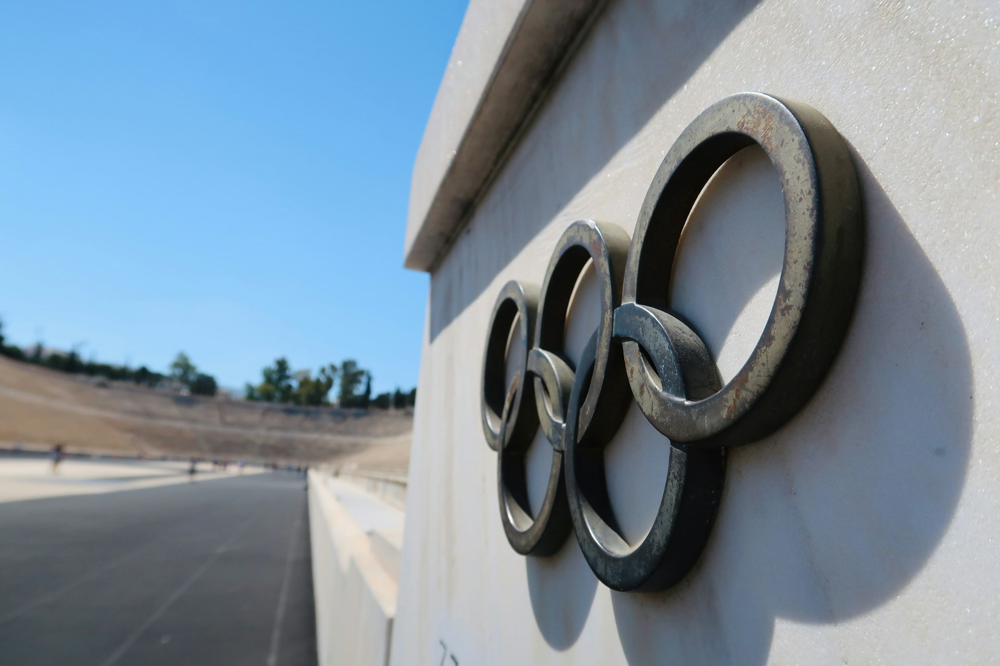
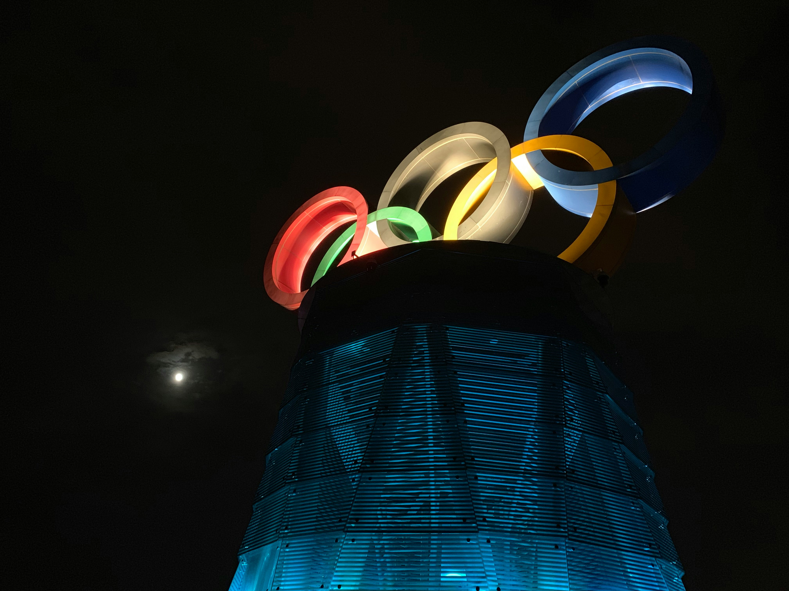

Фото: Julio Hernandez / Unsplash
Мы решили выяснить, что стоит за этой трансформацией. Нашей целью стало не просто составление рейтинга сильнейших сборных за два десятилетия, но и поиск ответа на вопрос: какие факторы — экономические, географические или даже физические — определяют успех на Олимпиаде сегодня?
Разумеется, мы были не первыми, кто задался этим вопросом. Например, в исследовании Predicting Olympic Medal Distributions (ResearchGate, 2024) авторы строят сложные статистические модели, чтобы предсказать прорыв тех или иных стран, и приходят к выводу, что ВВП и население по-прежнему играют ключевую роль, но аутсайдеры появляются всё чаще. Другая работа, Body Size and Performance in Olympic Sports (NCBI, 2024), подтверждает: современный спорт — это эпоха экстремальной специализации, где чемпионское тело может быть как миниатюрным (гимнастика), так и гигантским (баскетбол), что делает Олимпиаду доступной для людей с самыми разными данными.
Опираясь на эти выводы, мы сформулировали две гипотезы.
Первая: несмотря на то, что США, скорее всего, сохраняют абсолютное лидерство по общему числу наград, мы ожидаем увидеть стремительный рост Азиатско-Тихоокеанского региона (Китай, Япония, Корея), который постепенно меняет привычный «евро-американский» расклад сил.
Вторая: за 20 лет география успеха должна была расшириться — мы предположили, что количество стран-новичков на пьедестале заметно выросло, что доказывает переход Олимпийских игр от элитарного клуба к по-настоящему глобальной арене.
Как работали с данными: Мы собрали и объединили четыре исходных датасета, охватывающих все Олимпийские игры с 2006 по 2024 год: данные за 2006–2016 годы из открытого архива athlete_events.csv, а также отдельные таблицы по Токио‑2020, Пекину‑2022 и Парижу‑2024. Основная сложность заключалась в приведении их к единому формату: мы отфильтровали только строки с медалями, удалили дубликаты и технические артефакты, разделили имена спортсменов на имя и фамилию, а затем объединили всё в один массив. В итоге получилось более 10 000 записей о каждом медалисте. Для обработки и статистического анализа использовали Python (библиотеки pandas и numpy), все визуализации построены в Plotly — они интерактивны и позволяют изучать данные в деталях. Код полностью открыт и воспроизводим.
Работа распределилась так: Матильда Киреева занималась очисткой датасетов и созданием визуализаций, Лина Магомедова — приведением данных к единому формату и статистическим анализом, Альбина Федоренко — контролем качества, верификацией источников и структурой материала.
Карта мира — самый наглядный способ показать, как за 20 лет изменилась география успеха. Мы хотели одним взглядом охватить и лидеров, и новичков, чтобы читатель сразу увидел масштаб глобализации.
Цифры подтверждают: тройка лидеров остаётся стабильной. США безоговорочно удерживают первенство с 711 медалями, Китай на втором месте (492), Россия замыкает тройку (383). Но если присмотреться к карте внимательнее, главное открытие лежит не на вершине, а на периферии. Впервые в истории олимпийские награды получили Албания, Кабо-Верде, Доминика, Гренада, Буркина-Фасо и ещё более 15 государств. Особенно ярко выделяется Азия: Япония (252 медали), Республика Корея (191), Узбекистан (40) и Индия (24).
Однако расширение географии успеха заметно не только по медалям, но и по самому факту участия. За 20 лет на Олимпийских играх дебютировали десятки стран, для которых сам выход на олимпийскую арену уже стал историей. В Турине-2006 впервые выступили Албания, Мадагаскар и Эфиопия. В Пекине-2008 — Маршалловы Острова, Черногория и Тувалу. Зимние Игры 2014 года в Сочи установили рекорд по географии: сразу семь стран, включая Доминику, Зимбабве, Мальту, Парагвай, Того, Тонга и Восточный Тимор, впервые приняли участие в зимней Олимпиаде. В Рио-2016 дебютировали Косово и Южный Судан, а также впервые выступила сборная беженцев. Пхёнчхан-2018 добавил в зимнюю семью Малайзию, Нигерию, Сингапур и Эквадор, а Пекин-2022 — Гаити и Саудовскую Аравию.
Многие из этих дебютантов не ограничились простым участием. Косово в 2016 году сходу завоевало золото в дзюдо. Доминика, начавшая с зимней Олимпиады-2014, спустя десять лет выиграла первую в своей истории медаль (и сразу золотую) уже на летних Играх в Париже. А такие страны, как Албания и Кабо-Верде, которые выступали на Олимпиадах десятилетиями, наконец прервали медальные паузы в 2024 году, Буркина-Фасо сделала это в 2020-м, Гренада — в 2012-м.
В сумме количество стран, когда-либо поднимавшихся на пьедестал, выросло с 80 до 112. Это не просто статистика, а прямое доказательство второй гипотезы: глобализация спорта стала реальностью. Олимпийские игры перестали быть «элитарным клубом» и превратились в арену, где место на пьедестале может найтись для представителя любого континента, любой культуры и любого телосложения.
Карта показывает статику, но нам важно было увидеть, как именно менялись позиции лидеров год от года. Есть ли страны, которые совершили рывок? Кто, наоборот, сдал позиции?
За последние 20 Олимпийских игр США остаются недосягаемы: их результат колеблется от 100 до 126 медалей и достигает пика в 126 на Играх в Париже-2024. Как сказал Томас Бах – 9-й президент Международного олимпийского комитета (МОК): «Думаю, что Олимпиада в Париже в 2024 году – это история любви. Спортсмены, французы и болельщики по всему миру влюблены в них... Нам не следует заглядывать, чтобы найти какую-то мелочь здесь или там, которая могла бы подорвать наше полностью позитивное мнение о данном событии.» (ТАСС). Китай демонстрирует самый резкий рост — с 11 медалей в 2006 году до 91 в 2024-м. Япония и Республика Корея также резко ускорились после 2016 года. Россия после 2020 года исчезает с графика (0 медалей в 2018 и 2024). Германия и Великобритания держат стабильные показатели (около 30–44 и 60–67 медалей соответственно). График подтверждает обе гипотезы: США сохраняют лидерство, но доля азиатских стран в общем медальном зачёте выросла почти втрое.
Этот график подтверждает первую гипотезу: США сохраняют лидерство, но доля азиатских стран в общем медальном зачёте выросла почти втрое.
Линейная динамика показывает тренды, но для итогового рейтинга нужна понятная «турнирная таблица». Столбцы с накоплением сразу дают понять, кто сколько золота заработал.
Суммарный рейтинг десятилетия выглядит так: США — 711 медалей (251 золото), Китай — 492, Россия — 383, Германия — 333, Великобритания — 323, Франция — 279. Япония (252) и Республика Корея (191) уже обогнали Австралию и Италию. Вместе три азиатские державы набрали 935 медалей — почти столько же, сколько вся Европа без Германии и Великобритании. У США и Китая золото составляет около 35 %, у Японии и Нидерландов — выше 30 %. График окончательно подтверждает главную гипотезу: США сохраняют абсолютное лидерство, но азиатский блок уверенно теснит традиционных европейских гигантов.
Этот график мы назвали «биологическим паспортом» медалей. Нам было интересно, изменились ли за 20 лет физические характеристики чемпионов. Становятся ли спортсмены выше, тяжелее или, может быть, моложе? Или побеждают люди с самыми разными данными? Обратите внимание: детальные антропометрические данные за 2024 год на момент подготовки были недоступны, поэтому мы ограничились периодом 2006–2022.
Рост. Глядя на верхний график, мы видим поразительную стабильность. Средний рост медалиста из года в год держится в районе 175–180 см. Интересное наблюдение: обратите внимание на «усы» графика. Спортом могут заниматься все — от атлетов ростом чуть выше 140 см (вероятно, гимнастика) до настоящих высоток под 220 см (баскетбол или волейбол).
Вес. Средний вес медалистов колеблется в районе 70–75 кг. Однако посмотрите на точки-выбросы (особенно в 2008, 2012 и 2016 годах). Мы видим атлетов весом более 150 кг. Разброс веса в «летние» годы (2008, 2012, 2016) гораздо выше, чем в «зимние» (2006, 2010, 2014). Это логично: летние игры включают тяжёлую атлетику и борьбу супертяжёлых категорий.
Возраст. Самый вдохновляющий график. Хотя «золотой возраст» побед – это 23–27 лет, мы видим, что границы размываются. В 2008 и 2012 годах на пьедестале оказывались люди в возрасте под 60 лет (скорее всего, конный спорт или стрельба). Это говорит о том, что современная медицина и методики тренировок позволяют оставаться в элите десятилетиями. Олимп «стареет» в хорошем смысле слова — спорт для всех!
Гипотеза №1 подтверждена. Анализ медального зачета за период с 2006 по 2024 годы показывает, что Соединенные Штаты сохраняют лидирующие позиции по общему числу медалей. Но наблюдается устойчивый и значительный рост показателей стран Азиатско-Тихоокеанского региона, в первую очередь Китая, Японии и Республики Корея. Азия набрала почти тысячу медалей и превратилась в равного соперника. Этот тренд особенно ярко проявляется в рамках летних Олимпийских игр, где происходит основная борьба за медали.
Гипотеза №2 подтверждена. За прошедшие двадцать лет мы стали свидетелями значительного увеличения количества стран, впервые завоевавших олимпийские награды. Рост числа медалистов из разных регионов мира отражает повышение уровня спортивной подготовки в странах, ранее не демонстрировавших таких результатов, и усиление общей конкуренции. Олимпийские игры становятся все более всеохватывающей ареной, где спортивные достижения становятся доступнее для атлетов из большего числа государств.

Фото: Sean / Unsplash
Олимпийские игры 2006–2024 доказали: мир спорта стал глобальным, инклюзивным и непредсказуемым. Именно в этом – главная победа современного олимпизма. Любой флаг может подняться на пьедестале, а любой атлет – независимо от возраста и физических данных – способен войти в историю.